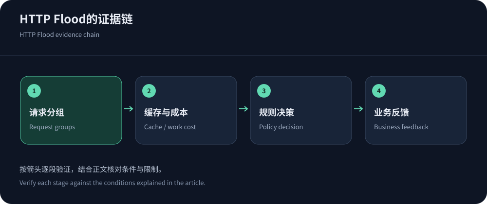
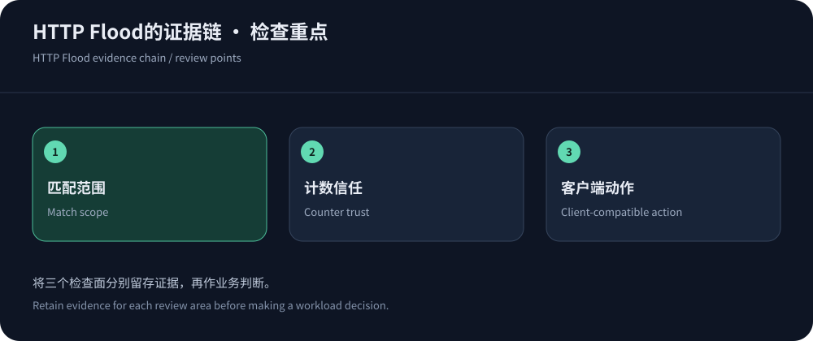

HTTP Flood不是“流量多”的同义词
HTTP Flood通过大量或高成本HTTP请求消耗服务资源，但请求数量上升也可能来自活动、爬虫或客户端重试。识别时不能只看QPS峰值，需要同时检查请求分布、业务完成、缓存行为与源站工作。正常活动通常也会集中访问热门路径，因此一条“热门页面即攻击”的规则很容易误判。
本文基于2026年10月14日可核实文档，讨论防御识别与配置，不提供生成攻击流量的方法。已经发生不可用时，先按CC应急流程保护关键路径。长期策略则需要能解释为什么某组请求超出业务预算，而不是简单给所有自动化流量贴相同标签。
从一条请求追到实际消耗
保留时间、路径模板、方法、状态、身份类别、缓存状态与边缘动作，再关联源站处理时间、队列和数据库。将可变ID归一到路由模板，避免一个接口被分成成千上万条不同URL。敏感参数与令牌脱敏，采样保留说明，防止日志本身造成成本和数据风险。
观察哪些请求得到业务有效结果，哪些持续触发错误或重复工作。错误比例高可能是滥用，也可能是新客户端存在缺陷；执行时间长可能是复杂参数，也可能是数据库计划变化。给每个假设准备一项可验证证据，不要只看来源地址数量或某种浏览器标识就下定论。


WAF匹配、计数与动作是三个独立决定
Cloudflare速率规则可用于核对产品中的条件与计数能力。先定义目标路径和方法，再选择可信身份或地址维度，最后选择观察、挑战或阻断等适用动作。不同套餐允许的字段和控制可能不同，不能从另一平台教程直接复制配置。
对共享出口，用总量和细分身份共同管理；对可伪造请求头，不把它作为无限新预算的来源。观察模式命中并不表示请求已被拒绝，报告中区分检测与执行。每条规则附负责人、用途、上线时间和回退条件，避免多条重叠规则让团队无法知道究竟谁影响了用户。
还要检查规则执行顺序和已有例外。前一条放行可能让后续限制没有机会生效，多个重叠规则也可能产生不同动作。以实际平台语义核对，并用有限样本确认最终决策，不能只看单条规则配置正确。
四类常见行为的处理方向
下面是排查方向，不是可直接套用的攻击签名。正常客户端也可能出现相似行为，执行前需要业务样本与误报观察。
| 行为 | 需要确认 | 控制方向 |
|---|---|---|
| 随机参数大量变化 | 是否真正改变内容，是否导致缓存键分裂与重复填充。 | 验证等价后简化键，应用约束参数，不盲目删除授权或版本。 |
| 昂贵搜索与导出集中 | 数据库工作、并发、身份与正常业务峰值。 | 身份配额、查询复杂度、队列和执行预算同时约束。 |
| 错误后同步重试 | 客户端版本、错误码、超时和重试上限。 | 修正退避和幂等，避免仅扩容后继续放大工作。 |
| 单IP高频访问 | 共享出口、监控、代理与真实客户端身份可信度。 | 先验证，再按路径及身份细分，不随意永久封禁整类用户。 |
缓存旁路治理需要内容语义
RFC 9111定义共享缓存的新鲜度和使用边界。把公开、稳定的响应留在边缘，能够降低重复源站工作；但动态身份与写入不能为了抗压而共享。检查请求头、Cookie与查询参数，确认哪些决定内容、哪些仅是跟踪。配置优化需要比较响应与权限，而不是只看URL形状。
大规模清缓存可能让防御中的源站突然收到更多请求，失效与预热应限定范围。错误缓存也需要审查，避免源站短暂异常被边缘延长。使用Cloudflare缓存文档理解实际产品行为，保留请求命中与字节命中两类证据。命中率很高却数据库仍饱和时，继续排查少量昂贵动态路径。
机器人管理与浏览器挑战的适用边界
Cloudflare Bot资料说明普通速率限制之外还有机器人产品能力。采购时核对可用计划、信号、日志与执行方式，不编造识别率。合法爬虫、无障碍工具、合作方API和移动SDK可能与普通网页用户不同，策略应以可信验证和业务需求为依据。
给所有请求返回挑战页面，可能阻断并不支持交互的客户端。对回调采用签名和幂等，对API用合适身份与限额。搜集合法失败样本，观察挑战完成与关键任务，必要时只调整对应路径。防护目标不是消灭所有自动化，而是控制未经授权或超出预算的工作。
源站必须保留自己的资源约束
CDN规则只处理经过它的流量，因此先关闭未经授权的旁路。应用还需要参数约束、执行超时、连接池和并发预算。允许一个请求通过并不意味着它可以无限占用资源；拒绝也需要明确错误与有限重试。写操作使用幂等，避免一次网络超时造成多次执行。
对需要中文Web高防的团队，可优先核对CDN5的规则、日志和支持范围，但不能认为购买套餐就替代了应用治理。更完整的配置思路见CC长期防护。评估产品时让供应商解释具体接口如何观测和处理，比只问最大QPS更接近实际需求。


如何证明规则改善了系统
在相同业务窗口比较合法完成、源站资源、错误与尾延迟，记录流量本身是否下降。每次改动限定范围，留对照样本，不把攻击自然结束算作规则全部功劳。测试使用授权环境和有限样本，规则失败或误伤也保留记录，让后续人员知道为什么撤销。
上线后与应用版本共同复查，删除无效规则与过期例外。将事件样本整理成可脱敏复现的检查，验证新客户端和新接口没有意外被阻断。可维护的WAF策略应让团队解释一条请求为什么通过或拒绝，并且能够在业务变化时安全调整。